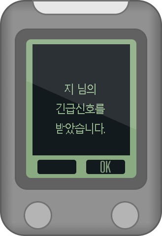

01. jeegy Play 전원켜기
• jeegy Play는 코인배터리 CR2032 2개를 사용합니다.
• 제품을 구매할 때, jeegy Play에 코인배터리가 내장되어 있습니다.
• jeegy Play 전원을 켜기 위해서는 디바이스의 왼쪽 버튼을 길게 누릅니다.
02. jeegy Play 전원끄기
• jeegy Play 전원을 끄려면 왼쪽 버튼을 길게 누르면 됩니다.
• “전원을 끄시겠습니까?” 묻는 화면이 나타납니다.
• 이 화면이 나타나면 오른쪽 버튼을 누르면 1초후 전원이 꺼집니다.
03. 배터리 교체하기
• 배터리는 코인 배터리 CR2032 두개를 사용합니다.
• 배터리를 교체하려면 부드러운 천을 바닥에 깔고, 디바이스를 올려 놓습니다.
• 4개의 나사를 드라이버로 제거합니다. 오래된 배터리를 빼고 배터리 커버를 덮은 후에 다시 나사 4개를 조입니다.
• 배터리는 언제 교환하나요?
* jeegy Play는 정상사용 (1주일마다 1일 5시간 사용) 기준으로 약 10개월 사용이 가능합니다.
* 배터리가 거의 소진되면 디스플레이가 흐려 지거나, 정상적으로 디스플레이가 되지 않습니다.
* 위 사항에 해당하는 증상이 나타나면 배터리를 교체해주세요. 배터리 교체는 매뉴얼의 배터리 교체항목을 참고하세요.
04. jeegy Play 화면 설명
① 시계 12시간/24시간 표시기능 ② 앱에서 메시지가 오면 이 표시가 디스플레이 됩니다. ③ 스마트폰과 블루트스로 연결이 되면 이 표시가 디스플레이 됩니다. ④ 전화나 메시지가 들어오면 이 표시가 디스플레이 됩니다. ⑤ 스마트폰의 GPS 신호가 양호하면 이 표시가 디스플레이 됩니다. ⑥ 트래킹 기능을 활성화 하면 이 표시가 디스플레이 됩니다. ⑦ 앱에서 그룹 라이딩을 활성화 하면 이 표시가 디스플레이 됩니다. ⑧ 최고속도 알람값을 경신했을 때, 이 표시가 디스플레이 됩니다. ⑨ 목표거리 알람값을 경신 했을 때, 이 표시가 디스플레이 됩니다. ⑩ 평균속도가 설정값의 이하로 내려가면, 이 표시가 디스플레이 됩니다.
05. jeegy Play 기본화면 1
① 현재속도를 디스플레이 합니다. 라이딩 중이 아니면 0.0으로 표시됩니다. 단위: km/h (시속)
② 여기 디스플레이할 항목은 앱에서 결정할 수 있습니다.
(메뉴 → 내 기기 → jeegyPlay → 라이딩 정보 표시 설정 → 화면 1 2열)
③ 다음 정보가 표시될 수 있습니다.
- HIGH 최고속도 km/h(시속)
- AVERAGE 평균속도 km/h(시속)
- DISTANCE 이동거리 km
- RIDE 이동시간 hh:mm:ss
- ACC ALT 누적고도 meter
- SLOPE 경사도 %
06. jeegy Play 기본화면 2
① SP: 현재속도 km/h(시속)
② AV: 평균속도 km/h(시속)
③ DS: 이동거리 km
④ HI: 최고속도 km/h(시속)
⑤ RID: 이동시간 hh:mm:ss
기본화면 2의 항목들은 고정이고, 변경이 불가능합니다.
07. jeegy Play 기본화면 3
① SP: 현재속도 km/h(시속)
② HI: 최고속도 km/h(시속)
여기 디스플레이할 항목은 앱에서 결정할 수 있습니다.
(메뉴 → 내 기기 → jeegyPlay → 라이딩 정보 표시 설정 → 화면 1 2열 )
08. 트래킹
• jeegy Play로 자전거 속도계 및 경로 트래킹을 할 수 있습니다.
• “트래킹" 기능을 사용하면 현재속도 등 다양한 리이딩 정보를 실시간으로 볼 수 있습니다.
• 또한 라이딩 경로를 기록해서 서버에 저장할 수 있습니다.
• jeegyPlay로 트래킹을 하려면 다음과 같이 합니다.
• 트래킹을 하려면 스마트폰과 블루투스로 연결이 되어야 합니다.
• 스마트폰 앱과 디바이스를 블루투스로 연결 후 트래킹을 시작하기 위하여 왼쪽 버튼을 짧게 누릅니다.

• “트래킹을 시작할까요?” 질문 화면이 뜨면 왼쪽 버튼을 짧게 누릅니다.
• 트래킹이 시작되면 트래킹 라벨이 디스플레이 됩니다.
• 트래킹 중에 jeegy Play의 왼쪽 버튼을 짧게 누르면 트래킹은 일시정지가 됩니다.
• 화면에는 “일시정지 중 입니다.”라는 문구가 뜹니다.
① 왼쪽 버튼”RESUME”을 누르면 트래킹이 재개 됩니다.
② 오른쪽 버튼"FINISH”를 누르면 트래킹이 종료됩니다.
09.그룹라이딩
• jeegy Play로 그룹 라이딩을 할 수 있습니다. 그룹 라이딩은 동료 라이더들과 그룹을 구성해서 라이딩을 하는 것 입니다.
• 그룹 라이딩을 하면 앱이나 디바이스에서 동료 라이더들의 위치를 실시간으로 확인할 수 있습니다. 또한 우리 그룹 라이더 들이 얼마나 멀리 있는지 확인도 가능합니다.
• 그룹 라이딩을 시작하고 끝내는 기능과 그룹을 구성하는 기능은 스마트폰 앱에서 가능합니다. 자세한 사항은 스마트폰 앱이나 앱 매뉴얼을 참고해 주십시오.
• 스마트폰앱에서 그룹 라이딩을 활성화 하면 “GROUP” 회면에 라벨이 표시됩니다.
그룹 라이딩 시작 종료기능은 디바이스에서 작동할수 없으므로 반드시 스마트폰 앱에서만 가능합니다.
10.그룹라이딩 화면 1
• 그룹 라이딩 화면 1에서는 라이딩 구간에서 라이더들이 어디에 있는지 확인이 가능합니다.
• 이 화면은 그룹 라이딩이 활성화 되면 자동으로 나타납니다.
① 라이딩 전체 구간을 7개의 구간으로 나누어 각 구간에 몇명의 라이더가 있는지 표시합니다.
② 각 구간에 있는 라이더의 닉네임이 표시됩니다. 한 구간에 모두 4명까지 표시됩니다. 3명 이상부터는 … 로 표시 됩니다.
③ Zoom 레벨 표시영역입니다. zoom레벨은 다음과 같은 단계가 있습니다.
0.5km → 1km → 2km → 5km
④ 왼쪽버튼"ZOOM”을 누르면 zoom 레벨이 변경됩니다.
⑤ 오른쪽 버튼을 길게 누르면 긴급신호가 다른 그룹원들에게 전달됩니다.
* 버튼을 눌러 zoom레벨을 변경 할 때, 스마트폰 앱과 통신시간이 소요되므로 약 0.5초의 시간차가 있습니다.
12.내 긴급신호 보내기
• 그룹 라이딩 중에서 긴급한 상황이 발생하면 같이 라이딩을 하는 그룹원들에게 긴급신호를 보낼 수 있습니다.
• 디바이스에서 긴급신호를 보내려면 디바이스의 우측 버튼을 길게 누릅니다.
* 긴급신호는 그룹 라이딩 기능중에만 사용이 가능합니다.
• 긴급신호를 보낸 상태에서 오른쪽 버튼을 짧게 누르면 원래 화면으로 돌아갑니다.
13.다른 라이더의 긴급신호 수신
• 그룹 라이딩 중 다른 라이더가 긴급신호를 보내면, 화면과 같이 긴급신호 수신을 알려줍니다.

• 긴급신호를 수신하고 오른쪽 버튼"OK”를 누르면 원래 화면으로 돌아갑니다.
* 긴급신호수신 알림 화면은 10초 동안 표시되며 아무 버튼을 누르지 않으면 자동으로 원래 화면으로 돌아갑니다.
15.펌웨어 업데이트
• jeegyP lay는 앱을 통해서 최신 펌웨어로 업데이트가 가능합니다.
• 메뉴 → 내 기기 → jeegyPlay → 펌웨어 업데이트 → 시작
• 펌웨어 업데이트 시간은 스마트폰 기기에 따라 다르나 보통 3분 ~ 6분 정도의 시간이 소요됩니다.
• 펌웨어가 업데이트 된 후에는 자동으로 디바이스가 재부팅 됩니다.
• 펌웨어가 업데이트 되는 동안 디바이스 화면에는 아래와 같은 화면이 표시됩니다.
• 펌웨어가 업데이트 되는 동안 디바이스의 버튼을 조작하면 오류가 발생할수 있으므로 기다리는 동안 별도의 조작을 하지 않는것을 권장합니다.
인증표시 사항
| 인증을 받은자의 상호 | 주식회사 코너스톤 스마트 |
|---|---|
| 기자재의명칭(모델명) | 특정소출력무선기기(무선데이터통신시스템용 무선기기) JeegyPlay |
| 식별부호 | R-C-8KS-JeegyPlay |
| 제조년월일 | 별도표기 |
| 제조자/제조국 | 주식회사 코너스톤 스마트/ 한국 |
"해당 무선설비는 운용 중 전파혼신 가능성이 있습니다."
- 1. 사용온도: -20~50℃
- 2. 전원: 3V 배터리
- 3. 사용주파수:2402~2480MHz
- 4. AS정보: 070-8185-9807